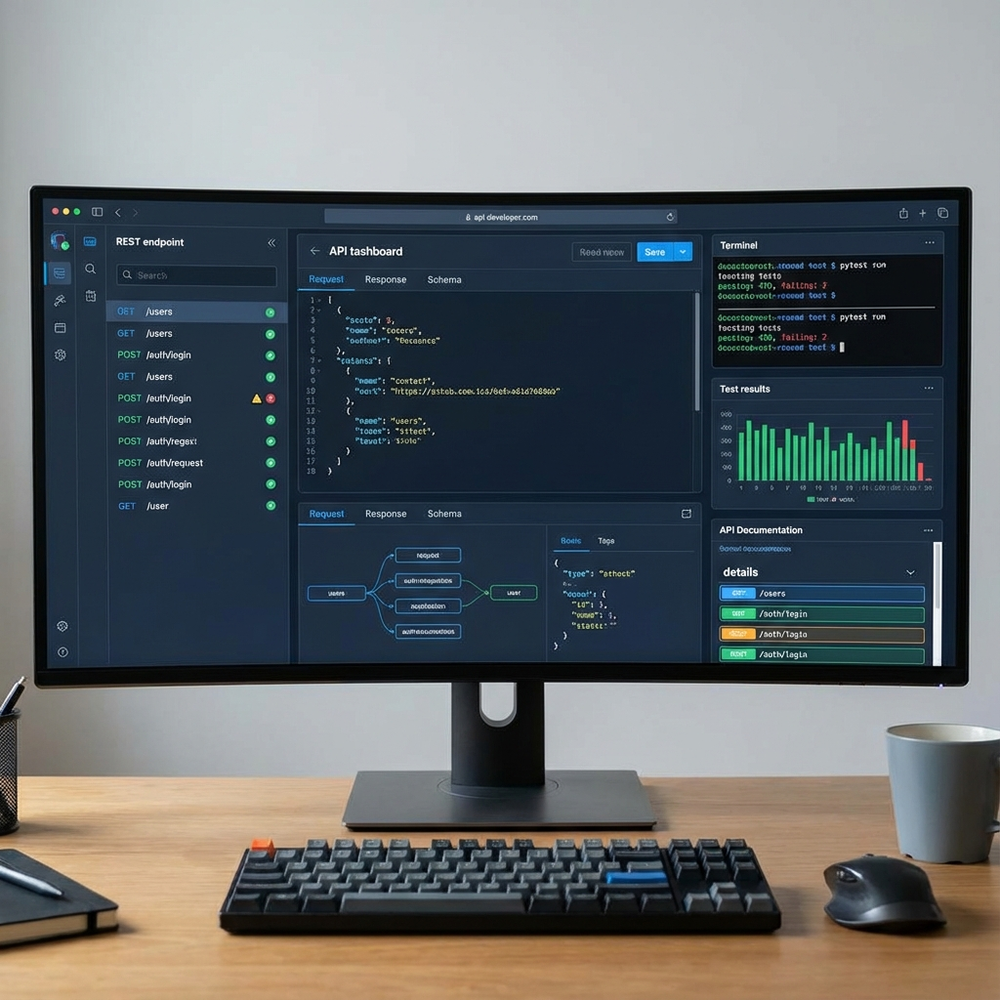
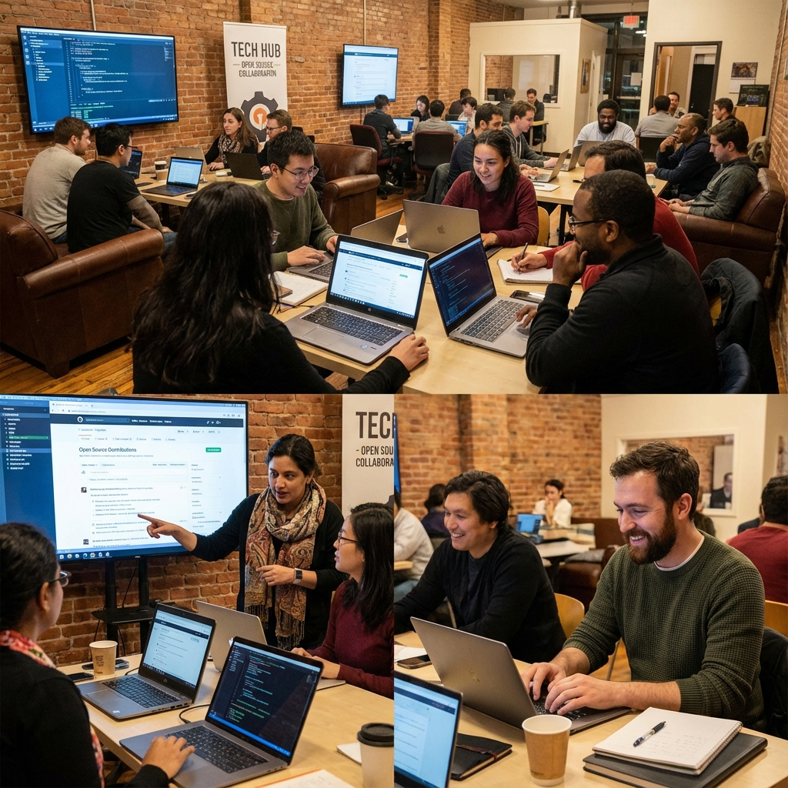

Building reliable test automation frameworks and ensuring software quality through
systematic testing approaches. Specializing in API testing, web automation, and CI/CD integration.
How I can help solve your quality engineering challenges.
Test Automation Strategy
Design and implement comprehensive test automation frameworks that scale with your product.
Reduce manual testing effort and improve release confidence through strategic automation.
API Testing & Validation
Build robust API test suites to validate contracts, data integrity, and edge cases.
Ensure reliable backend services through systematic API testing approaches.
CI/CD Integration
Integrate automated tests into your CI/CD pipelines for continuous quality assurance.
Catch issues early and enable faster, more reliable deployments.
Quality Process Improvement
Analyze existing testing processes and identify opportunities for improvement.
Implement best practices, reduce flaky tests, and enhance overall quality metrics.
Test Framework Development
Create maintainable, reusable test automation frameworks using Python, Playwright, and modern tools.
Build solutions that your team can easily extend and maintain.
Manual Testing Excellence
Design comprehensive test cases, perform exploratory testing, and ensure thorough coverage.
Bridge the gap between manual and automated testing for complete quality assurance.
Measurable impact and achievements.
2+
Years Experience
QA Automation & Manual Testing
100+
Test Cases Automated
Web & API Test Scenarios
CI/CD
Pipeline Integration
Continuous Testing Enabled
1
Major Projects
Flow Hub
Professional work experience and projects showcase.

November 2025
Flow Hub – API Automation & Testing Project
Built an end-to-end project to strengthen understanding of API testing and automation.
Designed API contracts, request/response schemas, and frontend-backend interactions.
Validated API behavior, data integrity, and edge cases while practicing automation scenarios.
Impact: Comprehensive API test coverage, improved understanding of contract testing, and
hands-on experience with automation frameworks.
Developed Python-based automation framework for SaaS product testing. Implemented reusable components,
page object models, and integrated with CI/CD pipelines for continuous testing and improved test
reliability.
Impact: Reduced manual testing effort, enabled faster release cycles, and improved test
reliability through systematic automation.
Core skills and expertise developed through professional experience.
QA Automation
QA Automation Engineer (SDET-1) at SproutsAI • Flow Hub – API Automation & Testing
Project
Test Automation
QA Automation Engineer (SDET-1) at SproutsAI • Flow Hub – API Automation & Testing
Project
API Testing
QA Automation Engineer (SDET-1) at SproutsAI • Flow Hub – API Automation & Testing
Project
Continuous Integration and Continuous Delivery (CI/CD)
QA Automation Engineer (SDET-1) at SproutsAI
Manual Testing
Manual Tester at SproutsAI
Functional Testing
Manual Tester at SproutsAI
Regression Testing
Manual Tester at SproutsAI
Exploratory Testing
Manual Tester at SproutsAI
Test Case Design
Manual Tester at SproutsAI
Defect Tracking
Manual Tester at SproutsAI
Software Quality
2 experiences at SproutsAI
Software Development Life Cycle (SDLC)
Manual Tester at SproutsAI
Agile Methodology
Manual Tester at SproutsAI
Startup Environments
2 experiences at SproutsAI
API Automation
QA Automation Engineer (SDET-1) at SproutsAI
Playwright
Flow Hub – API Automation & Testing Project
I'm a QA Automation Engineer (SDET-1) with a strong growth mindset and hands-on experience working in a
fast-paced startup SaaS environment. Coming from a non-traditional background in Aeronautical Engineering,
my transition into software testing has been driven by curiosity, problem-solving, and continuous learning.
I began my career as a Manual Tester, where I built a solid foundation in understanding product behavior,
user workflows, edge cases, and risk-based testing. Over time, I transitioned into QA Automation, where I
work on automating web and API test scenarios, contributing to automation frameworks, and supporting CI/CD
pipelines to improve test reliability and release confidence.
I enjoy understanding how systems behave under different conditions and how automation helps make testing
more scalable and efficient. I value collaboration, knowledge sharing, and working closely with developers
and product teams to deliver high-quality software.
The Temple Road Development Initiative - A Divine Calling
Beyond my professional work, I'm deeply passionate about community service and faith-driven initiatives. In
2021,
with Lord Shiva's blessings, I embarked on a sacred mission to make the Sri Amara Lingeshwara Swamy Kona temple
in Tirupati accessible to devotees. Despite having no prior experience in construction or road building, and
coming from an Aeronautical Engineering background, I felt divinely guided to take on this monumental task.
The temple, located deep in the forest, was nearly inaccessible. The path was treacherous—covered with uneven
stones, sharp turns, and dangerous slopes. During monsoons, heavy water flow would completely block the route,
making it impossible for devotees to reach the sacred site. People would slip and fall on the rocky terrain, and
vehicles couldn't pass through the narrow, stone-filled path.
Over two years (2021-2023), working alone with unwavering faith in Lord Shiva, I built cement steps by carrying
200 sand bags half a kilometer into the forest over three months, sometimes using my bike. With no construction
experience, I learned as I worked, completing safe cement steps in just five days. After heavy rains created a
massive hole and redirected water flow, I spent two months carrying stones weighing half a ton each from distant
places, building a bridge that allows both foot traffic and vehicles while maintaining natural water flow. I
cleared dense vegetation, removed countless stones, redirected dangerous water channels, and filled deep holes,
transforming a narrow, single-person trail into a wide, safe pathway by pouring red soil over the cleared route.
On the auspicious day of Varalakshmi Vratham (August 20, 2021), I performed Bhoomi Pooja with fellow devotees to
seek blessings before beginning the work.
What was once a dangerous, nearly impassable route is now a clear, safe road. Devotees can now reach the temple
confidently, without fear of slipping, falling, or being blocked by water. The project includes the development
of multiple temple sites including Rama Lingeshwara Temple and Kamakshi Amma Temple.
This experience taught me that with faith, determination, and divine guidance, even someone with no experience
can accomplish the impossible. It reinforced the importance of perseverance, community service, and giving back.
Every stone I moved, every step I built, was a lesson in project management, problem-solving, and the power of
unwavering commitment to a cause greater than oneself.
Work Experience
●
Apr 2024 - Present
QA Automation Engineer (SDET-1) at SproutsAI
Automated web and API test scenarios for a SaaS product, focusing on improving test coverage and release
confidence. Implemented Python-based automation frameworks, integrated tests with CI/CD pipelines, and
collaborated with developers to align test scenarios with business logic. Monitored automation runs and
fixed flaky tests to improve reliability.
●
Aug 2023 - Mar 2024
Manual Tester at SproutsAI
Worked on manual testing of a SaaS product by understanding business requirements and user workflows.
Designed and executed detailed test cases covering functional, regression, and exploratory scenarios.
Identified edge cases, logged clear defects, and collaborated closely with developers and product
stakeholders
to ensure feature stability.
●
Jun 2016 - May 2020
B.Tech in Aeronautical Engineering at Hindustan University
Graduated with a 7.7 CGPA. As an aeronautical graduate engineer, I developed a passion for flight and
aerospace technology. This foundation in engineering principles helped me transition into software testing
with a strong analytical and problem-solving mindset.
Personal projects and community initiatives I'm passionate about.
2021 - 2023
Temple Road Development Initiative
Led a 2-year personal initiative to construct a road to Sri Amara Lingeshwara Swamy Kona temple in
Tirupati.
Took complete responsibility for planning and execution with Lord Shiva's blessings, making the temple
accessible to devotees.
Impact: Transformed an inaccessible path into a safe, usable road, enabling hundreds of
devotees to visit the temple safely. Demonstrated project management, perseverance, and community service.
Continuously upskilling in Python, Playwright, API testing, and exploring AI-assisted testing tools.
Building hands-on projects to strengthen understanding of testing strategies and automation frameworks.

Ongoing
Testing Community Engagement
Engaging with the QA community through knowledge sharing, exploring modern testing practices,
and staying updated with emerging technologies in software quality engineering.
Recent work and continuous learning.
2024 - Present
QA Automation Engineer at SproutsAI
Automating web and API test scenarios, contributing to automation frameworks, and supporting CI/CD
pipelines.
Continuously improving test coverage and reliability.
November 2024
Flow Hub API Testing Project
Completed end-to-end API automation project, strengthening understanding of API testing, contract
validation,
and automation frameworks.
Ongoing
Continuous Learning & Skill Development
Actively upskilling in Python, Playwright, API testing, and exploring AI-assisted testing tools.
Documenting learnings and best practices.
Let's discuss how I can help improve your testing processes, automate workflows, or solve quality
engineering challenges.
Reach out through any of the channels below.